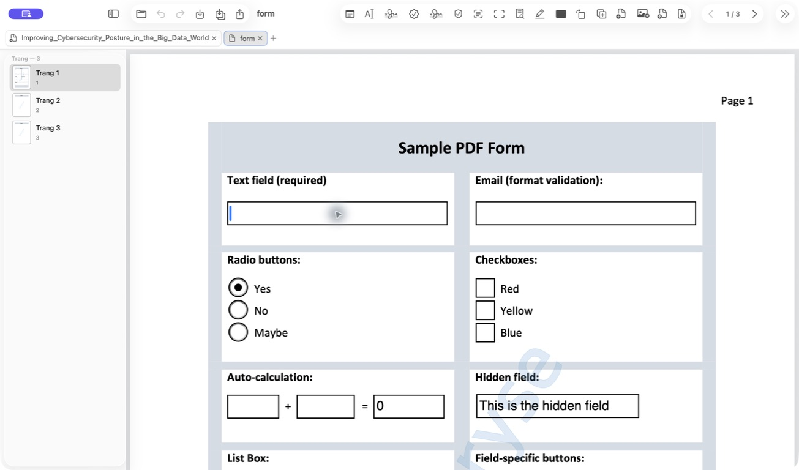
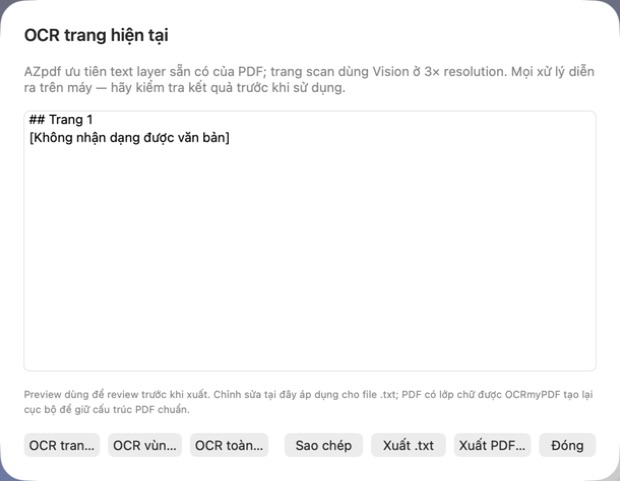

AZpdf — báo cáo QA UI/UX
Kiểm thử thủ công có hỗ trợ accessibility trên macOS · 17/07/2026 · bản nhánh codex/macos-v1-public
01 · PDF văn bản nhiều trang + ghi chú
- Mở tài liệu, sidebar hiển thị thumbnail và điều hướng trang.
- Tạo ghi chú; Inspector tự mở vùng nhập.
- Ghi chú được sửa nội dung và kéo đến vị trí mới; trạng thái tài liệu chuyển sang “Đã chỉnh sửa, chưa lưu”.
02 · PDF biểu mẫu tương tác
- PDFKit nhận diện và hiển thị đầy đủ widget biểu mẫu; radio button chuyển trạng thái từ off sang on.
- Thanh công cụ, Save/Save As và điều hướng trang sẵn sàng trong cùng flow.
Theo dõi: công cụ accessibility tự động không thể set trực tiếp text field (AXError.failure). Cần một vòng xác nhận bằng bàn phím/chuột thật trước release để phân biệt giới hạn automation với lỗi nhập liệu của PDFKit.

03 · PDF ảnh-only + flow OCR
- Mở PDF ảnh-only và khởi chạy sheet OCR thành công.
- Sheet hiển thị preview, OCR trang/vùng/toàn bộ, sao chép, xuất TXT và xuất PDF có lớp chữ.
- Vision không nhận dạng được nội dung từ icon — đúng kỳ vọng cho fixture không có chữ đọc được.
Theo dõi: trang image-only chưa render nội dung trực quan trong khung đọc ở fixture này. Cần test thêm với scan văn bản thật (có chữ) và hoàn tất flow xuất PDF OCR trước public v1.
